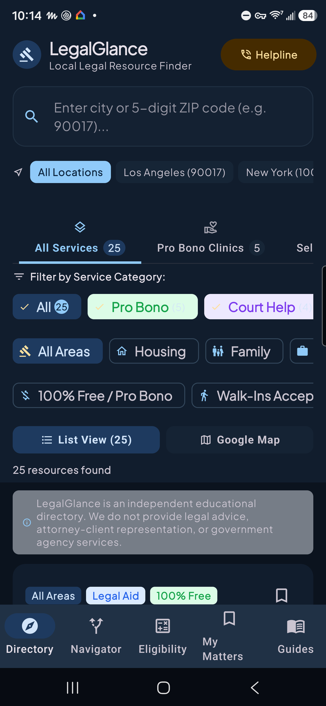
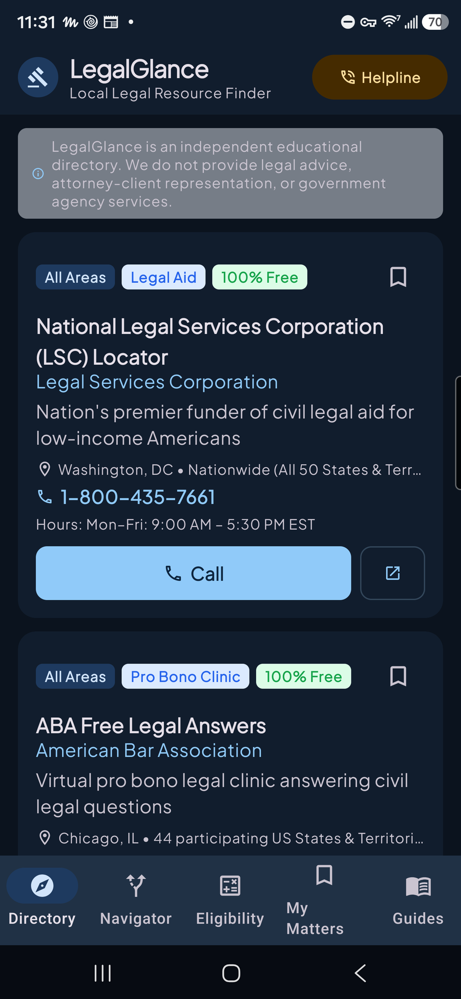

LegalGlance
When someone needs legal help, they usually need it on the worst week of their year, and the first problem is embarrassingly basic: who do you even call? LegalGlance answers that with a directory of legal aid and related services that you can search by the place you actually live, right on your phone.
Help, without a paywall.
Android · Free forever. No ads, no subscription, no unlock.
- A real directory. Legal aid and related services covering all 50 states and DC, plus international listings, with names, addresses, and phone numbers kept current.
- Search where you live. Look up help by city or ZIP code and get the services that actually cover your area.
- Near me. If you allow it, the app uses your approximate location and works out distances on the phone, so the closest help comes first.
- A hand from Brain. Scryware Brain runs on your device and can help you sort out what kind of help fits your situation, without your questions leaving the phone.
- Free means free. People in need should not have to pay to find help, so there is nothing to buy in this app and there never will be.


Privacy
LegalGlance has no account and no tracking. Your searches run on your phone, and if you use near me, your approximate location is used on the device and never sent to Scryware. The full wording is in the LegalGlance section of the privacy policy.
How to get it
LegalGlance is in closed testing on Google Play. Join the Scryware Testers group first, then opt in below and install it from the Play Store. Testing only counts while the app stays installed, so keep it on your phone.